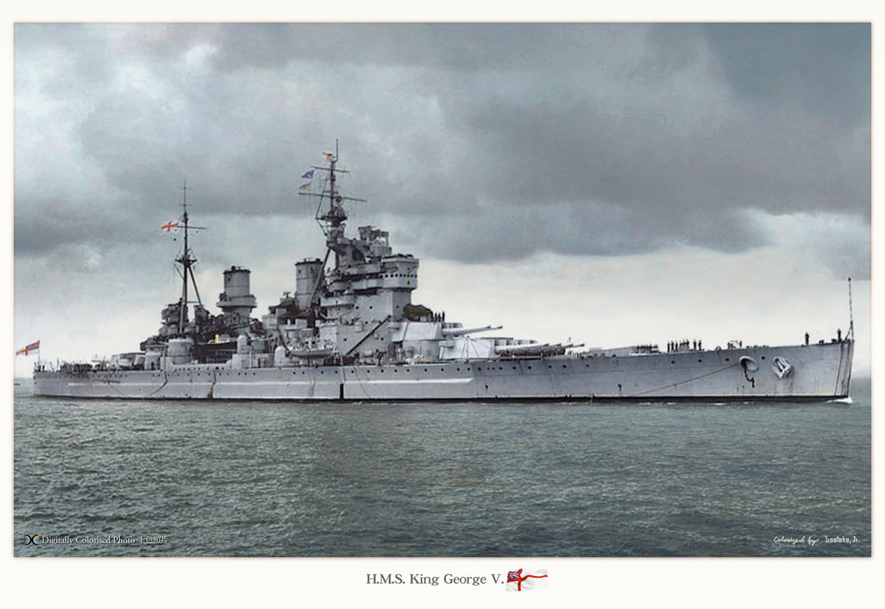

The French large destroyer, Le Fantasque.
The Italian destroyer, Baleno.
The Japanes heavy cruiser, Ashigara.
The US heavy cruiser, Los Angeles.
The US battleship, Wisconsin.

The Royal Navy's, King George V.
Japanese aircraft carrier, Shokaku.
US aircraft carrier, Tarawa.
US submarine, Silversides.